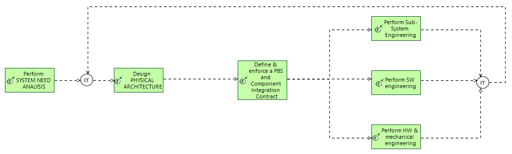

The Interface Trip
Engineering Process
Engineering Capabilities > Define a Solution satisfying Need > The Interface Trip
Challenge: How to build, justify and allocate internal and external interfaces to sub-systems and components .
- Check consistency of imposed external interfaces description, and system need/solution definition
- Build and justify internal interfaces definition upon functional analysis, exchanges, functional chains etc.
- Enforce compliance of sub-systems/SW/HW parts with these interface through automatic generation of their requirements and interfaces definitions
Related Diagrams
3 The Interface Trip

This figure describes ↵
How to build, justify and allocate internal and external interfaces to sub-systems and components .
- Check consistency of imposed external interfaces description, and system need/solution definition
- Build and justify internal interfaces definition upon functional analysis, exchanges, functional chains etc.
- Enforce compliance of sub-systems/SW/HW parts with these interface through automatic generation of their requirements and interfaces definitions
For each step of this process, involving an engineering task or activity, the description gives some hints and methological recommendations. These recommendations are complementary with the description of the involved activity per se, in the context of the engineering concern and the process.
Contribution of each engineering activity to this process
| Engineering activity | Specifics of activity for this process |
|---|---|
|
|
From the Interface Maangement point of view, Need Analysis mainly focuses on checking compatibility of external interfaces between the system of interest and other systems or actors. For each external system whose interface is imposed, check that all functions, functional chains and scenarios allocated to the system have corresponding elements in the external system interface definition : exchanged elements and data, time-related protocols if any, performance or non-functional constraints, etc. Update function, functional chains and scenarios definition if needed. From system users / operators point of view, similarly capture their expectations in terms of nature of expected interactions with the system, state-of-the-art practices, preferred modalities, expected information delivery, eetc. |
|
|
Internal interfaces definition (and external interfaces not imposed by the customer, including user interfaces) is based on functional analysis of the solution architecture. The solution functional analysis describes its designed behaviour in terms of functions and their interactions/functional exchanges, functional chains and scenarios defining the way these functions and exchanges are involved in given situations, capabilities etc. Elements exchanged are also defined in terms of structure, contents, data. The architecture building process allocates functions to system components, and to external systems/actors/users. Therefore, the nature and contents of interfaces between solution components (internal interfaces) and external systems/users (external interfaces) are fully defined by the functional exchanges at boundaries of each component, along with their contents and dynamic behaviour from functional chains and scenarios. This conceptual, functional interface definition can then be optimised from an implementation and design point of view (e.g. by grouping exchanges, structuring exchange contents, adding technology-related representations, etc.). this results in precisely defining the interface contents to be developped and respected for each component. This implementation definition is fully explained and justified by the former functional description to which it is linked. The physical support of these communication and interface elements is also to be defined in terms of physical links that will carry them, and to which they will be allocated. |
|
|
The definition of internal and external interfaces made in the 'Design Solution Architecture' activity is a major part of the contract towards sub-systems, software and hardware engineering. It should be elaborated in a collaborative manner between all engineering teams concerned, so as to integrate constraints of each team. Once approved, interfaces definition is the single and common reference for all stakeholders. |
|
|
External interfaces of each sub-system should not be modified by the sub-system engineering team alone. If modifications are required, they should be collaborative, under responsibility of the system-level engineering team, along with other sub-systems, software, hardware engineering. Once a new reference interface definition is produced and validated by all stakeholders, it will be promoted and be imposed to all. |
|
|
External interfaces of each software component or sub-system should not be modified by the software engineering team alone. If modifications are required, they should be collaborative, under responsibility of the system-level engineering team, along with other sub-systems, software, hardware engineering. Once a new reference interface definition is produced and validated by all stakeholders, it will be promoted and be imposed to all. |
|
|
External interfaces of each hardware or mechanical component or sub-system should not be modified by the component engineering team alone. If modifications are required, they should be collaborative, under responsibility of the system-level engineering team, along with other sub-systems, software, hardware engineering. Once a new reference interface definition is produced and validated by all stakeholders, it will be promoted and be imposed to all. |